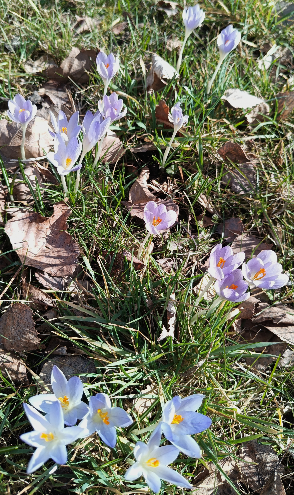
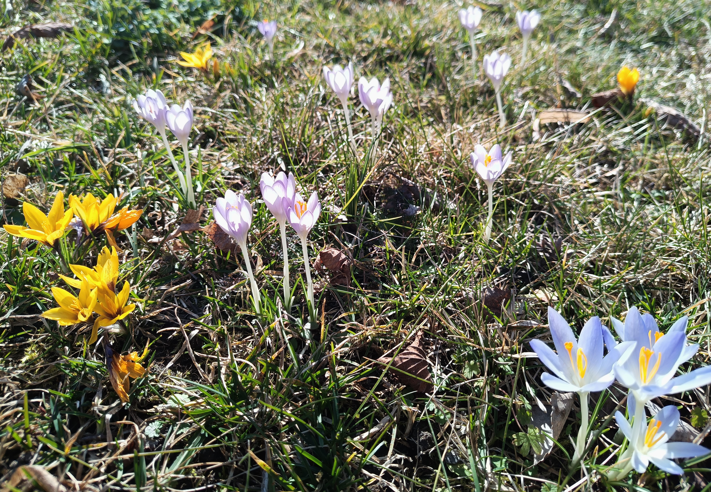
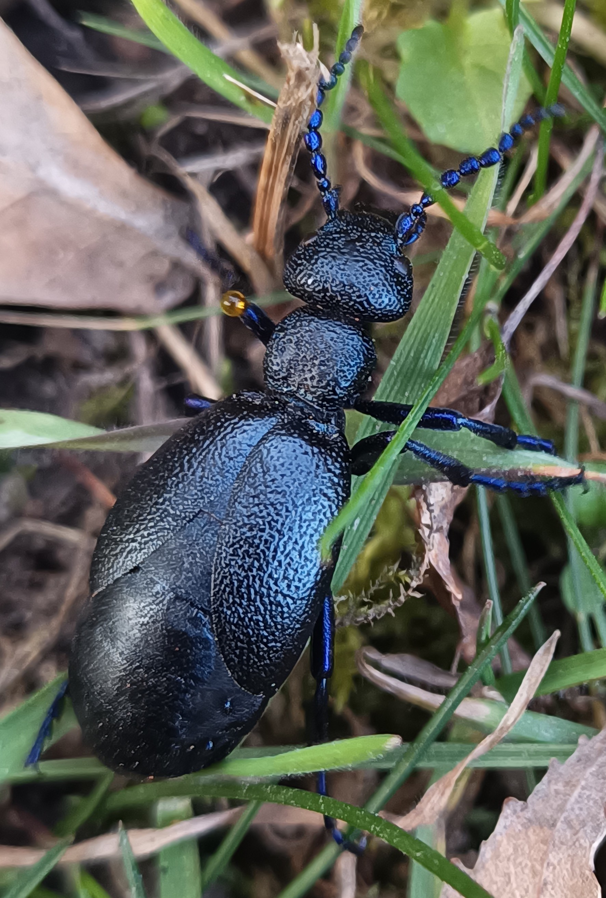

Gepflegte
Wildnis
Gepflegte
Wildnis
Willkommen
auf meiner Website über die Biotope unserer Straße in Leipzig!Ich möchte hier meine Pläne und Ziele für die Biotope wie auch die von mir beobachteten Arten für Sie jederzeit und aktuell verfügbar machen.
Tipps zum Umgang mit der Website finden Sie in der Hilfe.
Letzte Bearbeitung der Website: 21.04.2026
Aktuelles
Auf der Gesamtartenliste der Pflanzen für 2025 unterschied ich zwischen insgesamt
207 Pflanzenarten.
Ebenfalls fertiggestellt ist die Artenliste der Pflanzen auf der Fläche 7. Dort habe
ich 2025 113 Pflanzenarten bestimmt. Auch das Diagramm und die Tabelle, welche Pflanze dort in welchem Monat
geblüht hat, ist hier zu finden.
Die Mahd-Pläne für 2026 stehen. Ebenfalls sind auf der Seite die Geschehnisse von 2025 zusammengefasst.
Im Fotoarchiv ist 2025 fertiggestellt.
In der Tierartenliste sind Fotos durch einige Fundzahlen verlinkt. Dort in
"Artenlisten & Statistik(en)" befindet sich die Fauna immer auf dem aktuellsten Stand.
Fotos von Mitte April 2026

Der Besenginster fängt aktuell das erste Mal an zu blühen (Fl 9).

Das Frühlings-Fingerkraut auf dem Sandhaufen ist schon in Vollblüte. Oben auf dem Hügel unter dem Oregano kommt die Hauhechel gerade wieder heraus.

Dieser Zimtbär − ein zu den Bärenspinnern gehörender Nachtfalter − war auf der Fläche 7 gelandet.

Auf den Flächen 2, 3, 5, 6, 7 und 8 ist der
ausgesäte Kleine
Klappertopf in guten
Mengen gekeimt.

Dieses Foto zeigt links eine der gepflanzten Zypressen-Wolfsmilch-Büschlein auf der Fläche 8 und dessen (vermutlich vegetative) Ausbreitung in die Fläche (nach oben, unten und rechts).
Fotos von Anfang März 2026

Elfen-Krokusse südlich der Hecke (Fl 9)

Korolkow- und Elfen-Krokusse südich der Fl 6

Ein Schwarzblaues Ölkäfer-Weibchen